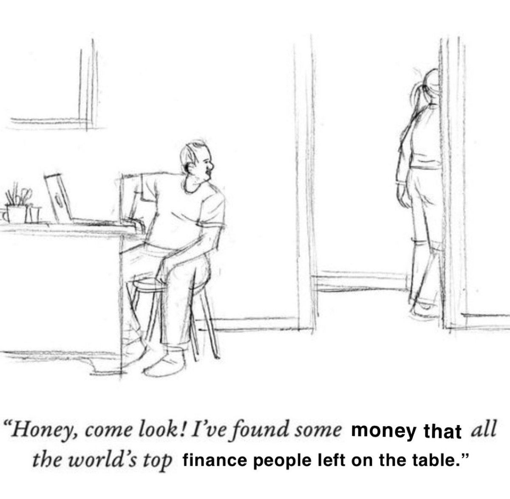

Essay
Why build it at all?

Setting the authorized return on equity for a regulated utility is oftentimes the most controversial aspect of a rate case. Cost of capital witnesses will protest that this is because ROE is "as much art as science," but this does the field of finance a great disservice. Yes, many models involve parameters that give analysts a somewhat wider discretion than we'd like, but we can get closer than practitioners would have us believe. Instead, it is a hedge by practitioners, since they spend much time foraging for data rather than testing their methods, so as a result end up citing decades-old papers and tired sources to make their claims. This Python package is intended to vastly accelerate the data collection and reporting aspects of regulatory cost of capital analysis. It is not cutting-edge, relying on basic CAPM plus French Fama risk models in addition to multi-stage and single-stage DCF, nor is it a magic bullet that will instantly win the imprimatur of Public Utility Commissions. My prosaic belief is that EMH is basically right and that the price information purveyed by markets contains mostly everything you need to know.
Since consumers across the country are feeling squeezed, every line item in the revenue requirement is subject to careful scrutiny, including rate case expense. My hope is that this tool will greatly hasten and cheapen cost of capital analyses with a combination of instant data collection, so long manually parsing Value Line reports, with transparency and verifiability through code. Premium data subscriptions such as Value Line or Kroll's will still have value in some cases, but 90 percent of the results can be obtained with little more than free, publicly available information.
With token effort, anyone will be able to run this analysis. I plan to release two open source versions by July 4, 2026: a bare-bones package only dependent on yfinance and public APIs from FRED, and another that requires users to obtain a subscription to a financial data provider I'm testing out, Financial Modeling Prep. I have no technical ability, so 99 percent of the code is written by Claude and Codex.
A paucity of publicly traded water and gas distribution companies can make analyses sensitive to the choice of proxy group. I am in the process of including a PCA analysis to find companies that look like the score of companies, if that, currently included as part of the proxy group. I also included the wreckage of a workbook designed to salvage what I could from the comparable earnings model to no avail. The rest should be eminently familiar to any practitioner. The whole point of this page is to inject some personality into this extracurricular and hold myself accountable now that I've drawn a line in the sand and put my reputation at risk. This ends my self-indulgent monologue, so long until July 4th.